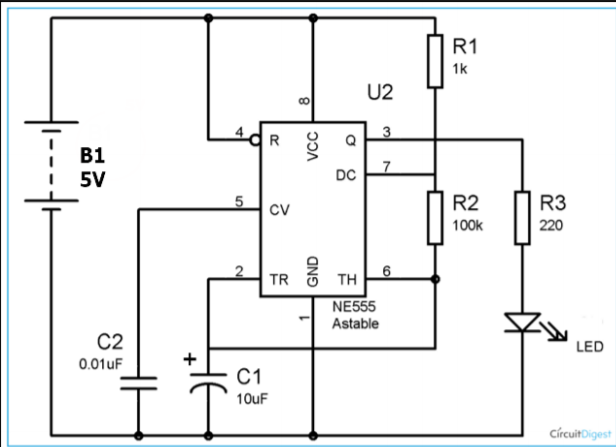
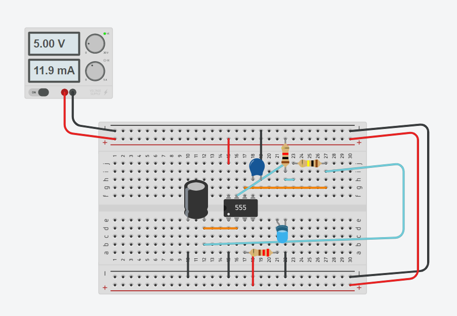
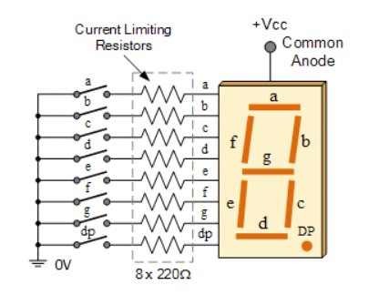
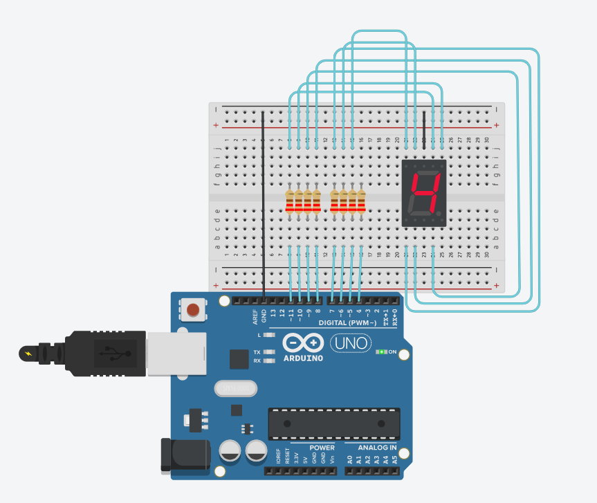
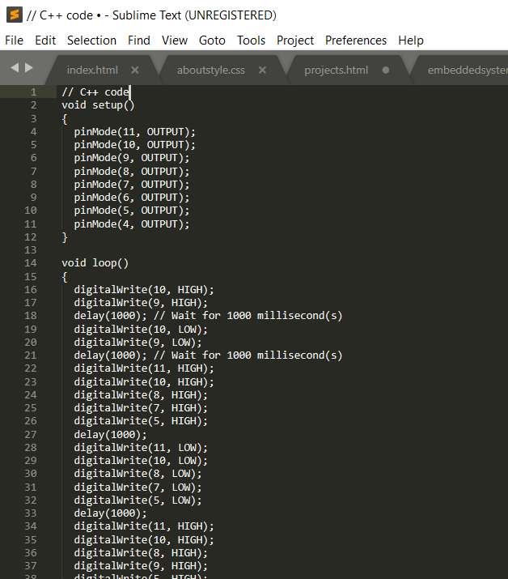

On this page I would go thru the projects that I have done with embedded systems! All embedded systems were done thru ThinkerCAD, an online web app that has various 3D modelling functions including circuit design which is what I generally use for the experimentation of embedded systems. This was done ThinkerCAD as lessons were online:(
An astable multivibrator is a free running oscillator which oscillate between two states continually producing two square wave output waveforms. This would result in an oscillating output.The 555 Timer IC can be connected either in its Monostable mode thereby producing a precision timer of a fixed time duration, or in its Bistable mode to produce a flip-flop type switching action. But we can also connect the 555 timer IC in an Astable mode to produce a very stable 555 Oscillator circuit for generating highly accurate free running waveforms whose output frequency can be adjusted by means of an externally connected RC tank circuit consisting of just two resistors and a capacitor. Below is a schematic of the astable 555.
With the above chip I used it as an oscillator, giving an output every oscillation. Thus when connected to an LED, the LED blinks! Below is a picture of the circuit I made on ThinkerCAD!
A countdown timer is made by the ustilisation of a 7-segment display and an ardunino board. This means that a softwear code is needed to instruct the board on which outputs need to be high. The set of outputs then light up the 7-segment display, showing the desired numbers. A 7-segment display, also written as “seven segment display”, consists of seven LEDs (hence its name) arranged in a rectangular fashion as shown. Each of the seven LEDs is called a segment because when illuminated the segment forms part of a numerical digit (both Decimal and Hex) to be displayed. An additional 8th LED is sometimes used within the same package thus allowing the indication of a decimal point, (DP) when two or more 7-segment displays are connected together to display numbers greater than ten. below is a schematic of a 7-segement display.
I then created a countdown timer buy using an arduino board, coding it to send outputs at delayed timings to simulate a timer. Below are pictures of the circuit I have made and the code I used to instruct the arduino board.
 Click here to return back to projects!!